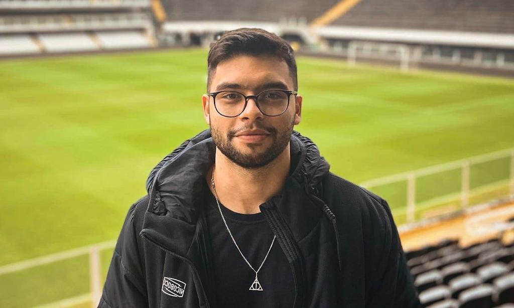
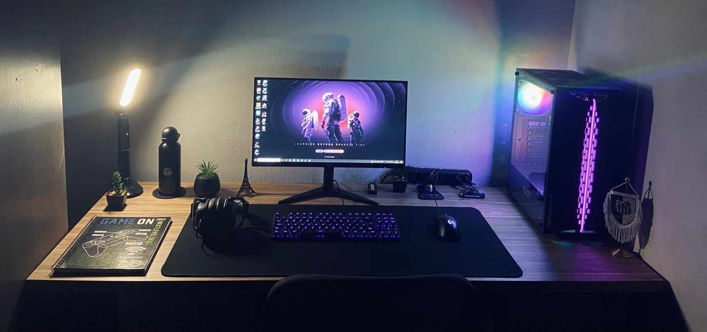

14 de Abril de 2021
Jornada do Zera à Primeria Vaga.

14 de Abril de 2021, em plena pândemia, consegui uma vaga de emprego,
na qual eu sonhava muito em conquistar, que era trabalhar em um dos
clubes de futebol mais famosos do Brasil, o Santos Futebol Clube. Onde
trabalhei por 1 ano e 7 meses no setor administrativo na parte de
operações de jogos. Nesse tempo, conquistei muitas coisas, fiz grandes
amizades e adquiri muitas experiências tanto pessoais como
profissionais.
Mas como na vida, sabemos que tudo é passageiro e que devemos ter em
mente que para conquistar outros objetivos em nossas vidas, é
necessário abrir mão de certas coisas. Por isso, no dia 16 de Janeiro
de 2023, tomei a decisão mais difícil da minha vida, criei coragem e
decidi pedir demissão para seguir um dos meus maiores sonhos que é
entrar na aréa de programação e conquistar a minha tão sonhada vaga
como desenvolvedor/programador.
20 de janeiro de 2023
Construção do meu setup.

Após o fim do meu ciclo no Santos Futebol Clube, realizei a compra do
meu setup para começar a minha jornada do zero na programação. E é
nesse setup, que iniciei os meus estudos, conseguindo dia após dia,
mais conhecimentos sobre a área. Mas mesmo assim, eu tinha em mente
que eu deveria encontrar alguma plataforma de estudos para que eu
pudesse me especializar e me aprofundar mais ainda no meus estudos e
também no meu aprendizado.